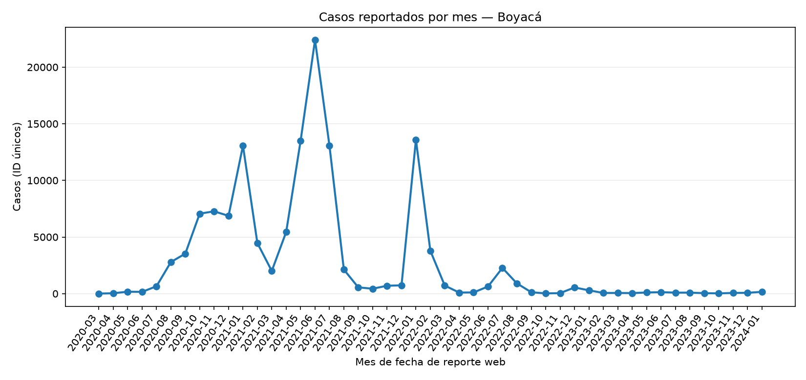
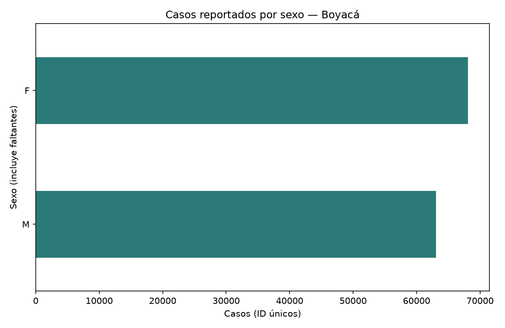

Pregunta: ¿Cómo evolucionó mes a mes el número de casos reportados durante el periodo seleccionado?
Departamento: Boyacá · Periodo: 2020-03 a 2024-01 · Fecha analizada: fecha reporte web · Conteo: IDs de caso únicos
Casos únicos en el periodo131,133Mes pico2021-06: 22,400 casos
Hallazgo
El mes con más casos fue 2021-06 (22400). La mayor variación porcentual mensual en valor absoluto ocurrió en 2022-01 (+1751.1%).
Evolución mensual

Distribución por sexo
Gráfico categórico de otra columna disponible en el CSV; los faltantes se muestran como “Sin dato”.

Limitaciones y limpieza
El conteo usa IDs de caso únicos; si un ID aparece repetido, se asigna al primer mes con fecha de reporte válida.
Se excluyeron 0 filas del archivo con fecha de reporte vacía o inválida, además de registros sin ID válido o sin fecha tras filtrar Boyacá.
Se detectaron 0 filas de Boyacá implicadas en IDs repetidos antes de deduplicar.
La fecha usada es fecha reporte web (publicación en el sitio web), no fecha de diagnóstico ni fecha de inicio de síntomas.
Los reportes pueden tener retrasos, correcciones y cambios en la vigilancia/pruebas; los conteos no equivalen necesariamente a incidencia real.
La descripción del portal advierte incertidumbre epidemiológica y actualizaciones/correcciones de la publicación.
Los meses sin registros válidos se muestran como cero; esto no demuestra ausencia real de casos.
El filtro departamental ignora diferencias de acentos, caja y espacios. Las fechas no interpretables y los registros sin fecha o ID válido no entran al conteo. Los datos faltantes de sexo se conservan como categoría “Sin dato”.